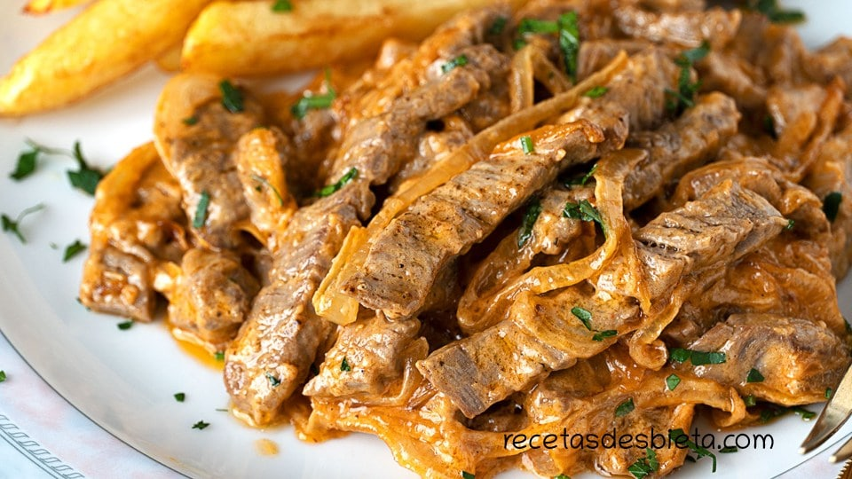

STROGONOFF DE TERNERA

Platón de la comida rusa, tan noble como popular.
Esta vez lo vamos a hacer de ternera, pero también puede ser con pollo si así lo preferís. Poquitos ingredientes pero muchísimo sabor!
Gracias Esbieta por salvarme el proyecto de TOD.
INGREDIENTES
- 350-400 g de solomillo de ternera
- 1 cdta de harina
- 1 cebolla mediana
- 130 g de nata fresca
- 1 cdta de tomate concentrado
- sal y pimienta negra molida al gusto
- aceite
PASOS
- Cortamos en medias rodajas la cebolla
- Cortamos la carne en tiras prestando atención a cortarlas en contra de las fibras.
- Añadimos una cucharadita de harina por encima de la carne y la enharinamos ligeramente con la ayuda de las manos.
- En una sartén añadimos un dedo de aceite y la calentamos a fuego alto. Cuando veas que el aceite está bien caliente, echamos la carne a la sartén.
- A fuego muy alto, la cocinamos un minuto. Verás que cambia de color y retira la de la sartén.
- En el mismo aceite y ya sin la carne, ponemos la cebolla, es importante dorar la cebolla, no pocharla y la doramos a fuego alto.
- Una vez la cebolla este dorada, retiramos de la sartén el exceso de aceite dejando solo la cantidad mínima.
- Y devolvemos a la sartén la carne junto con la cebolla.
- Añadimos una cucharadita de tomate concentrado y rehogamos un minuto. Es importante utilizar tomate concentrado.
- Cuando veas que el tomate ya está repartido, apagamos el fuego y añadimos 2 cucharadas o unos 130 gramos de creme fraiche o nata fresca (Mendicrim, Casancrem, Crematto, etc). Es importante que apagues el fuego, la nata no tiene que hervir en ningún momento.
- La salsa termina de hacerse con el calor residual de la sartén y de la placa.
- Añadimos sal al gusto y pimienta negra molida. Lo tapamos y antes de servir lo dejamos en reposo un par de minutos más.
- Espolvoreamos por encima con un poquito de perejil. Ya está lista para servir